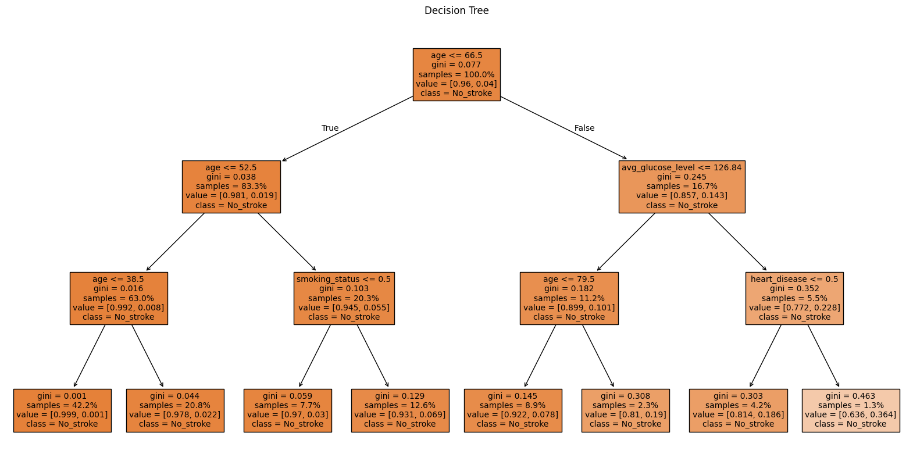
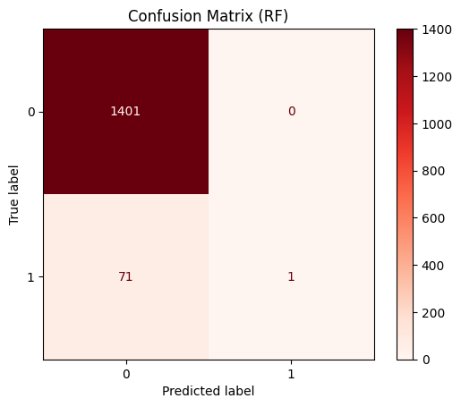
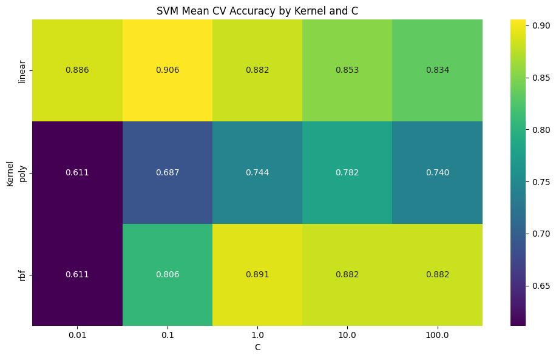
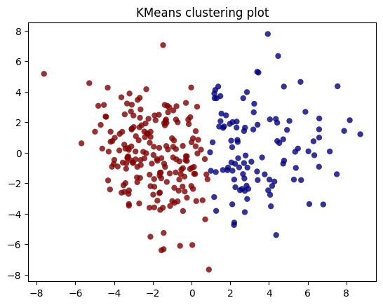
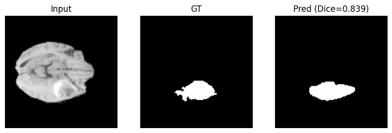
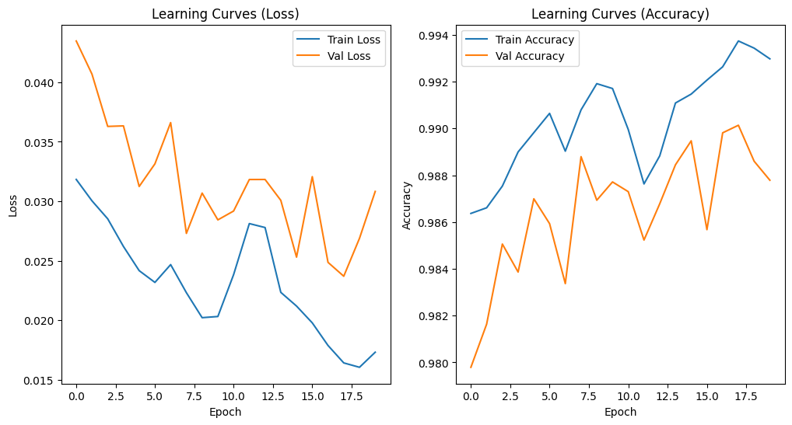

Not every prediction problem calls for the same algorithm. Sometimes the priority is a model you can fully explain to a stakeholder; sometimes there's no label at all and the goal is to discover structure on your own; sometimes the pattern is too complex for anything but a neural network. This project is a set of three applied exercises, each deliberately built around a different family of machine learning technique, to practice recognizing which tool fits which problem — and to be honest about each one's limitations.
A single decision tree is easy to read but prone to overfitting; a Random Forest trades some of that interpretability for stability, by averaging many trees together. I trained both on a clinical dataset to predict stroke risk from variables like age, glucose level, and smoking status, then evaluated whether the ensemble actually generalized better using out-of-bag (OOB) scoring — a built-in cross-validation technique for Random Forests.

Every split is traceable: the model's very first decision is a simple age threshold, which alone accounts for most of its predictive power — the kind of transparency a black-box model can't offer a clinician or a stakeholder.

Both models scored well above 95% accuracy — but almost entirely by predicting "no stroke" for everyone, since stroke cases made up a small fraction of the data. This is the real lesson of the exercise: with imbalanced classes, accuracy alone can hide a model that has learned nothing useful about the minority class.
Using the same clinical biomarker dataset (cognitive and biological measures used in Alzheimer's research), I approached it two different ways: first with a supervised classifier trained on known diagnostic labels, then — ignoring those labels entirely — with an unsupervised method to see whether the same underlying structure would emerge on its own.

A grid search across kernel type and regularization strength (C) shows the linear and RBF kernels both comfortably outperforming polynomial — and reveals exactly which hyperparameter combination generalizes best, rather than guessing.

Running K-Means on the same features (with the optimal number of clusters selected via the elbow method) recovers a very similar two-group split — evidence that the diagnostic groups aren't an artifact of the labels, but reflect real structure in the underlying data.
Classification tells you whether something is present; segmentation tells you exactly where. I built and trained a U-Net — a convolutional neural network architecture designed specifically for this — in Keras, to identify tumor regions in brain MRI scans at the pixel level.

Comparing the model's predicted mask (right) against the ground truth (center) gives a Dice score of 0.84 on this sample — a standard metric for segmentation overlap, where 1.0 would be a perfect pixel-for-pixel match.

Tracking training and validation metrics together makes it possible to catch overfitting early — here, both curves move together throughout training, showing the model was generalizing rather than memorizing.
Knowing multiple modeling approaches isn't about collecting techniques — it's about correctly diagnosing which one a problem actually needs, and being able to say honestly when a model isn't good enough yet. That judgment — interpretable vs. black-box, supervised vs. unsupervised, classical ML vs. deep learning — is exactly what separates someone who can run .fit() from someone who can be trusted to choose the right approach for a real product or business problem.